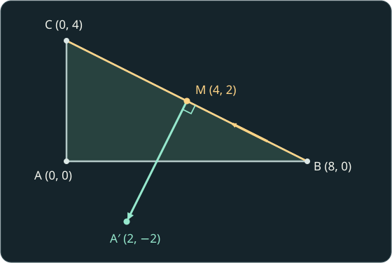

Proof challenges · Volume I
Atlas Math
Olympiad.
Can a triangle remember its shape? Can two missing lamps tell you how an entire grid was built? Pick a question and see how far your argument takes you.
Start with The Last Counter
Choose a challenge
Untimed · Pencil and paper welcome